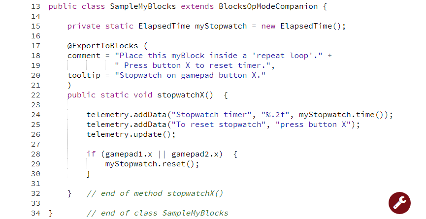
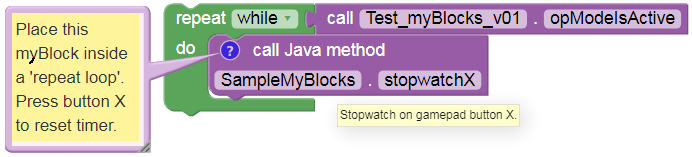

Timer Example
FTC timers offer much more capability than the familiar .sleep
Block. Java programmers can learn about timers from this Blocks
tutorial;
you can easily apply its lessons to Java programs.
When creating myBlocks, be careful when converting or ‘packaging’ a section of existing Java code into a myBlock method. As a programmer, you must consider where your myBlock might be placed in the OpMode. For example, if the myBlock is placed inside a repeat while loop, the Java method will be called many times – this may or may not be what you intended. Use the annotation comment to tell the Blocks user how your myBlock should be run, including looping (or not).
A particular caution with timers: creating or instantiating a new FTC timer also starts or resets that timer. If a timer is created inside a myBlock that’s used in a Blocks repeat loop, that timer will constantly reset and never advance to the intended time limit.
The following example separates the create timer task from the reset timer task.
Line 15: this single line of Java does all this: - declare a field called myStopwatch, of type (class) ElapsedTime - the field is private, can be used only in this class SampleMyBlocks - the field is static, can be used in static methods such as myBlocks - call the constructor method ElapsedTime() to instantiate a new ElapsedTime instance - assign that instance to the field myStopwatch
Lines 18-19 again show two strings of text (each in quotes), joined with a “+” character to form a single text string. This is an alternate way to meet the requirement that a comment field must be a single line of text, with no ‘line break’.
Line 22: this method has no inputs (empty parentheses) and no outputs (keyword void). This is why the annotation @ExportToBlocks was missing the parameterLabels field.
In Line 24 the data is displayed using a formatting code, indicated by the percent sign. The .2f will display a numeric value with 2 digits to the right of the decimal point.
Also on Line 24, the object myStopwatch uses a method time() to
retrieve that timer’s current value in seconds.
Line 28: the double-strokes operator || means “OR”. Other operators include && (“AND”), == (“EQUALS”), and != (“NOT EQUAL TO”).
Line 29: the object myStopwatch uses a method reset() to start the
timer again from zero.
So, what was the danger? A programmer might naturally place Line 15 inside the method, perhaps at Line 23. But that would reset the timer at every cycle of the repeat while loop. The stopwatch would always show zero.
Or, a programmer might use Line 15 to replace Line 29, since they “do the same thing”. But the object myStopwatch is needed at Line 24 also, for telemetry. Moving the telemetry to be after Line 29 does not help. If the operator has not yet pressed gamepad button X, the object does not exist and the program will crash.
When you clicked “Build Everything” in OnBot Java, all of the code in your SampleMyBlocks class was processed. That included creating the object myStopwatch, which became available for any method in that class. It was not necessary to declare it inside the myBlock method. In this case, it needed to be outside the method.
Here’s the myBlock in a repeat loop, with its comment and tooltip:
Again, the comment field is the only way to communicate with future users of your myBlock. They cannot see your Java code or its Java comments. Keep your myBlocks interface simple, and the instructions clear.
Note
This tutorial intends for you to manually type the Java code above. OnBot Java helps by suggesting some code as you type, and by entering import statements when classes are used. Android Studio helps even more. If you require pre-typed text of this example see below. The linked copy includes more Java comments, omitted above to focus on the Java code. Also not shown are the package and import statements.
Example Code
/*
This example is used in a tutorial on FTC myBlocks.
A gamepad button operates a simple timer.
The Blocks user places this myBlock in a loop.
*/
package org.firstinspires.ftc.teamcode;
import org.firstinspires.ftc.robotcore.external.BlocksOpModeCompanion;
import com.qualcomm.robotcore.util.ElapsedTime;
import org.firstinspires.ftc.robotcore.external.ExportToBlocks;
public class SampleMyBlocks_v03 extends BlocksOpModeCompanion {
private static ElapsedTime myStopwatch = new ElapsedTime();
@ExportToBlocks (
comment = "Place this myBlock inside a 'repeat loop'. Press button X" +
" to reset timer.",
tooltip = "Stopwatch on gamepad button X."
)
public static void stopwatchX() {
telemetry.addData("Stopwatch timer", "%.2f", myStopwatch.time());
telemetry.addData("To reset stopwatch", "press button X");
telemetry.update();
if (gamepad1.x || gamepad2.x) {
myStopwatch.reset();
}
} // end of method stopwatchX()
} // end of class SampleMyBlocks_v03